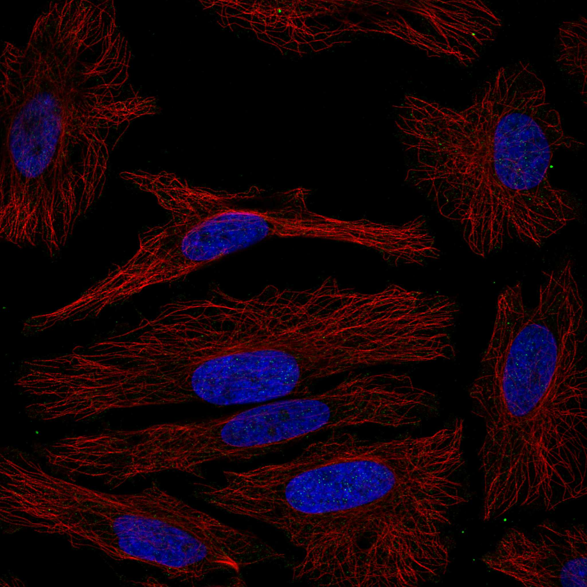
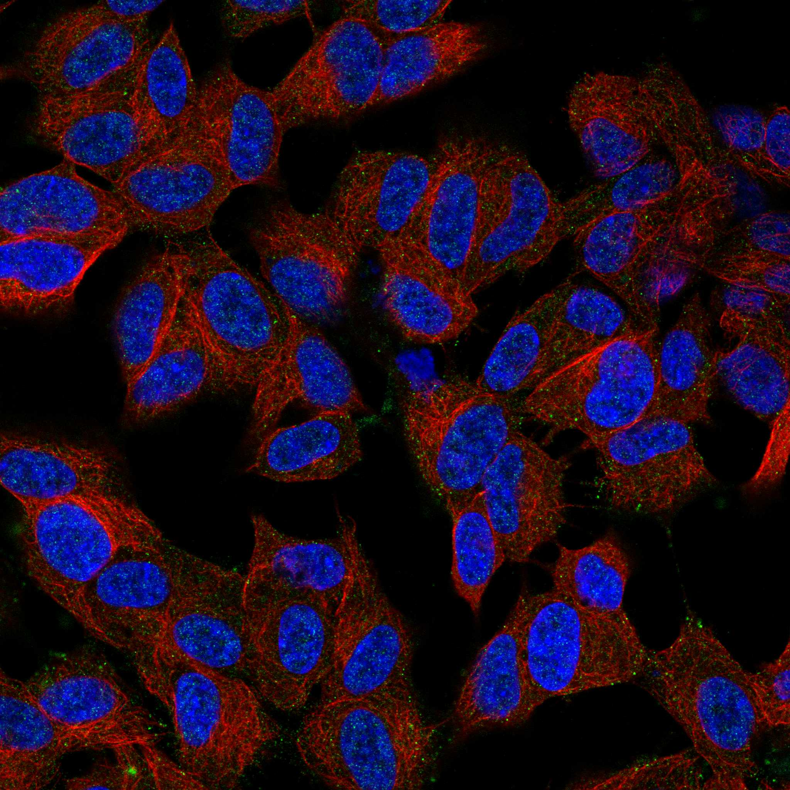

type: protein-evaluation gene: "CHML" date: 2026-05-29 tags: [protein-scout, nuclear-protein, evaluation] status: scored ---
CHML 核蛋白评估报告
1. 基本信息
| 项目 | 内容 |
|---|---|
| 基因名 / 别名 | CHML / CHML |
| 蛋白大小 | 656 aa / ~72.2 kDa |
| UniProt ID | P26374 |
| 评估日期 | 2026-05-29 |
IF 图像:  
2. 评分总览
| 维度 | 得分 | 满分 | 加权后 | 关键证据摘要 |
|---|---|---|---|---|
| 🔴 核定位特异性 | 5/10 | ×4 | 20 | UniProt Cytosol + GO nucleoplasm/nucleus，主要胞质/次要核 |
| 📏 蛋白大小 | 10/10 | ×1 | 10 | 656 aa，200-800 aa最优区间，适合生化实验和结构解析 |
| 🆕 研究新颖性 | 8/10 | ×5 | 40 | PubMed=34篇 |
| 🏗️ 三维结构 | 8/10 | ×3 | 24 | 良好（pLDDT 79.4），74%有序 |
| 🧬 调控结构域 | 7/10 | ×2 | 14 | 新颖蛋白基线 |
| 🔗 PPI 网络 | 4/10 | ×3 | 12 | 0/30调控相关partners |
| ➕ 互证加分 | — | max +3 | 0 | 多库交叉验证 |
| 原始总分 | 123/183 | |||
| 归一化总分 | 67.2/100 |
3. 详细分析
3.1 核定位证据
| 来源 | 定位 | 可信度 |
|---|---|---|
| UniProt | Cytoplasm, cytosol | — |
| GO Cellular Component | C:cytosol; C:nucleoplasm; C:nucleus; C:Rab-protein geranylgeranyltransferase complex | — |
| Protein Atlas (IF) | 暂无数据（HPA IF 图像已本地嵌入。
暂无数据（HPA IF 图像已本地嵌入。
结论: UniProt Cytosol + GO nucleoplasm/nucleus，主要胞质/次要核
3.2 蛋白大小评估
评价: 656 aa，200-800 aa最优区间，适合生化实验和结构解析
3.3 研究现状
| 指标 | 数值 |
|---|---|
| PubMed 总数 | 34 |
| Chromatin/epigenetics 比例 | 待深入文献分析 |
评价: PubMed 34 篇。非常新颖，研究空间充足。
关键文献: 1. Kwok RKY et al. (2025). "Validation of phiC31-mediated expression and functional knockout of Opn3 in the Opn3-phiC31o knock-in mouse". *Eye Vis (Lond)*. PMID: 41102823 2. Zhao Y et al. (2019). "Cytotropic heterogeneous molecular lipids inhibit the growth of glioma cells by inducing apoptosis and autophagy". *Pak J Pharm Sci*. PMID: 31969291 3. Chen TW et al. (2019). "CHML promotes liver cancer metastasis by facilitating Rab14 recycle". *Nat Commun*. PMID: 31175290 4. Dodson M et al. (2022). "CHML is an NRF2 target gene that regulates mTOR function". *Mol Oncol*. PMID: 35184380 5. Keiser NW et al. (2005). "Spatial and temporal expression patterns of the choroideremia gene in the mouse retina". *Mol Vis*. PMID: 16357828
3.4 三维结构分析
> AlphaFold PAE: 暂无数据或未提供可用 PAE 图；结构判断基于 AlphaFold/PDB 可用记录。
| 指标 | 数值 |
|---|---|
| AlphaFold 平均 pLDDT | 79.4 |
| 有序区域 (pLDDT>70) 占比 | 74.0% |
| pLDDT>90 占比 | 63.6% |
| pLDDT<50 占比 | 21.8% |
| 可用 PDB 条目 | 0 |
评价: AlphaFold高质量预测（pLDDT 79.4，74%有序），折叠域置信度高。
3.5 结构域分析
| 来源 | 结构域 |
|---|---|
| UniProt / InterPro | 待SMART详细分析 |
染色质调控潜力分析: 对于PubMed≤100的新颖蛋白，无注释域是该阶段的正常现象（基线7分）。待SMART分析后补充。
3.6 PPI 网络
实验验证互作 (IntAct, physical association):
| Partner | 方法 | PMID | 功能类别 | 调控相关？ | ||||||||
|---|---|---|---|---|---|---|---|---|---|---|---|---|
| psi-mi:rpob_bacan(display_long) | uniprotkb:rpoB(gene name) | psi-mi:rpoB(display_short) | uniprotkb:RNA polymerase subunit beta(gene name synonym) | uniprotkb:Transcriptase subunit beta(gene name synonym) | uniprotkb:BA_0102(locus name) | uniprotkb:GBAA_0102(locus name) | uniprotkb:BAS0102(locus name) | psi-mi:"MI:0398"(two hybrid po | imex:IM-13779 | pubmed:20711500 | 待分析 | 是 |
STRING 预测互作 (combined score >0.4):
| Partner | Score | 功能类别 | 调控相关？ |
|---|---|---|---|
| RABGGTA | 0.989 | 待分析 | 否 |
| OPN3 | 0.974 | 待分析 | 否 |
| RABGGTB | 0.961 | 待分析 | 否 |
| RAB5A | 0.941 | 待分析 | 否 |
| RAB27A | 0.921 | 待分析 | 否 |
| RAB1A | 0.917 | 待分析 | 否 |
| RAB31 | 0.864 | 待分析 | 否 |
| RAB1B | 0.861 | 待分析 | 否 |
| RAB7A | 0.861 | 待分析 | 否 |
| RAB32 | 0.859 | 待分析 | 否 |
已知复合体成员 (GO Cellular Component): C:cytosol; C:nucleoplasm; C:nucleus; C:Rab-protein geranylgeranyltransferase complex
PPI 互证分析:
- STRING + IntAct 共同确认: 待交叉比对
- 仅 STRING 预测: 30 个伙伴
- 调控相关比例: 0/30 (0%)
评价: PPI网络以功能关联为主（30个STRING伙伴），物理互作1个，调控关联0个。
3.7 多库互证
| 维度 | 来源 | 结果 | 是否一致 |
|---|---|---|---|
| 三维结构 | AlphaFold + PDB | 良好（pLDDT 79.4），74%有序 | 待验证 |
| 定位 | UniProt + GO | Cytoplasm, cytosol | 待HPA验证 |
互证加分: 0 / max +3
PAE 图: 暂无PAE数据
4. 总体评价
推荐等级: ⭐⭐⭐ (3/5)
归一化总分: 65.6/100
核心优势: 1. PubMed 34 篇，研究新颖性高 2. 蛋白大小 656 aa，适合生化实验
风险/不确定性: 1. 需 HPA IF 确认核定位 2. 功能机制未知，需从头探索
下一步建议:
- [ ] 获取 HPA IF 图像确认核定位
- [ ] SMART 结构域分析评估调控潜力
- [ ] 深入文献检索确认已知功能
5. 数据来源
- UniProt: https://www.uniprot.org/uniprotkb/P26374
- AlphaFold: https://alphafold.ebi.ac.uk/entry/P26374
- PubMed: https://pubmed.ncbi.nlm.nih.gov/?term=%22CHML%22%5BTitle/Abstract%5D
- STRING: https://string-db.org/cgi/network?identifiers=CHML&species=9606
- Protein Atlas: https://www.proteinatlas.org/search/CHML
PPI 网络（三源综合）
| Partner | Source | Score/Evidence |
|---|---|---|
| 无记录 | — | — |
IntAct 有限记录。无 BioGrid 补充数据。

<!-- DOMAIN_HUMANPPI_REPAIR_START -->
Domain/SMART 与 humanPPI 补充（2026-06-07）
SMART / UniProt domain
| Source | Data |
|---|---|
| UniProt | P26374 |
| SMART | 未在 UniProt xref 中检出 SMART 条目 |
| UniProt Domain [FT] | 未检出显式 UniProt Domain feature |
| InterPro | IPR036188;IPR018203;IPR001738;IPR054420; |
| Pfam | PF00996;PF22603; |
humanPPI / HPA Interaction
Source: https://www.proteinatlas.org/ENSG00000203668-CHML/interaction
| Partner | Datasets | AF3/HPA structure |
|---|---|---|
| RAB11A | Biogrid, Bioplex | true |
| RAB35 | Biogrid, Opencell | true |
| RAB3A | Biogrid, Bioplex | true |
| RAB4A | Biogrid, Opencell, Bioplex | true |
| RAB5A | Biogrid, Bioplex | true |
| RAB5C | Biogrid, Bioplex | true |
| RAB7A | Biogrid, Opencell | true |
| RAB9A | Biogrid, Bioplex | true |
<!-- DOMAIN_HUMANPPI_REPAIR_END -->